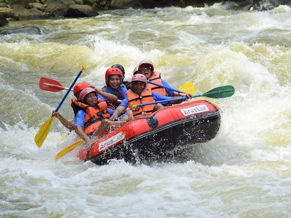
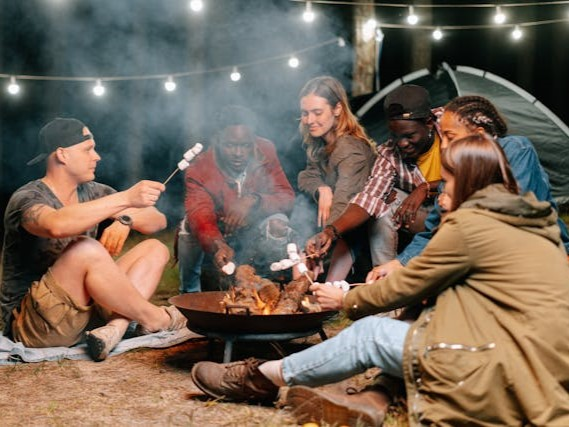
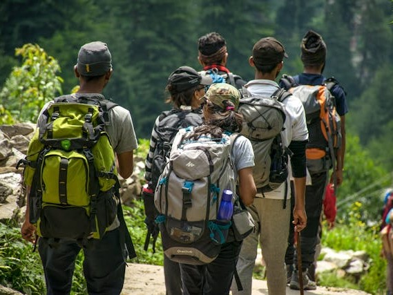

Explore Our Trip Options
Build-Your-Own Adventure
This package is designed to suit your unique interests and schedule. Choose your adventure level—from intense, multi-day rafting excursions to relaxed days filled with fishing and nature walks. Add activities like guided wildlife tours or scenic hikes, and customize the trip length to match your perfect getaway. Our team works closely with you to craft an itinerary that delivers an unforgettable outdoor experience tailored just for you.
Rapid Rush Day Trip
This action-packed day trip is designed for those who crave excitement but are short on time. Start your adventure in the morning with a safety briefing, followed by an intense white water rafting journey through Class III and IV rapids. Our expert guides will lead you through fast-moving waters and thrilling drops, making sure everyone feels the rush of the river safely. After a morning on the rapids, enjoy a catered riverside lunch to recharge, taking in the peaceful sounds of the river and surrounding forest. The day wraps up with an optional guided nature walk, where you can explore local wildlife habitats and enjoy a more relaxed pace before heading back.
Weekend Adventure Camp
This two-day experience offers a perfect blend of high-energy rafting and relaxed outdoor activities. Kick off the weekend with a thrilling white water rafting trip that’s great for beginners and seasoned adventurers alike, tackling a mix of Class II and III rapids. After an exciting day, arrive at our riverside campsite, where you’ll enjoy a hearty campfire dinner. Unwind as you gather around the fire, share stories, and stargaze. Sleep under the stars in our comfortable, eco-friendly tents and wake up refreshed. The second day begins with a tranquil fishing trip in the early morning, where you can unwind, connect with nature, and try your hand at catching local fish with our guides' tips and assistance.
Ultimate Wilderness Expedition
Our Ultimate Wilderness Expedition is designed for true outdoor enthusiasts who want to immerse themselves in the beauty and excitement of the wilderness. Over four days, experience the best of everything we offer. Day one kicks off with an exciting rafting trip, followed by setting up camp and settling in for the night with a campfire dinner. Days two and three include additional rafting sessions through progressively challenging rapids, ensuring even experienced rafters are thrilled. Each day also includes other activities like guided hikes, fishing trips, and nature walks, allowing you to explore the surrounding forest and learn about the local wildlife. At night, relax in comfortable, eco-friendly campsites, sharing stories and meals around the fire. By day four, you’ll leave with unforgettable memories and a deep connection to the wild.
Choose The Best Option For Your Party
Rapid Rush Day Trip
Weekend Adventure Camp
Ultimate Wilderness Expedition
Build-Your-Own Adventure
Duration
1 Day
2 Days / 1 Night
4 Days / 3 Nights
Flexible (1-5 Days)
Activities
White water rafting expedition, riverside lunch, and optional guided nature walk
White water rafting, overnight camping, and morning fishing trip
Multiple rafting trips, guided hiking, camping, and fishing
Customizable options include white water rafting, camping, fishing, hiking, and guided wildlife tours
Ideal For
Beginners or anyone with limited time looking for a full day of adventure
Families, couples, or small groups wanting an action-packed but relaxed weekend.
Adventure enthusiasts looking for an immersive, multi-day experience with a mix of intense activity and relaxation in nature.
Solo travelers, families, corporate groups, or anyone looking for a highly personalized outdoor experience..
Price
$150 per person
$350 per person
$850 per person
Starting at $200 per day per person (pricing varies by activities selected)
Contact Us for details